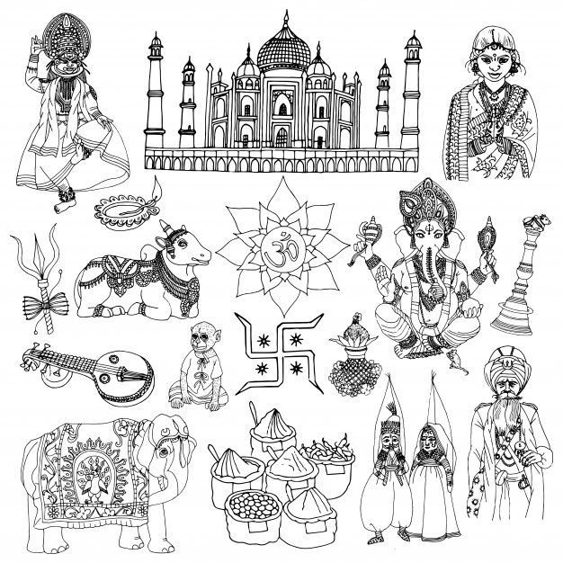
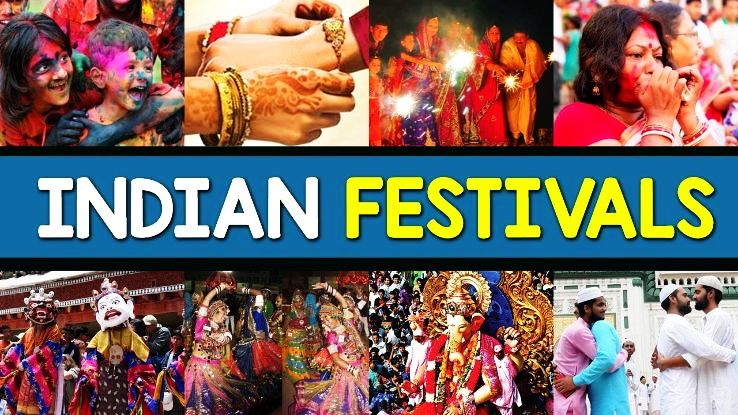
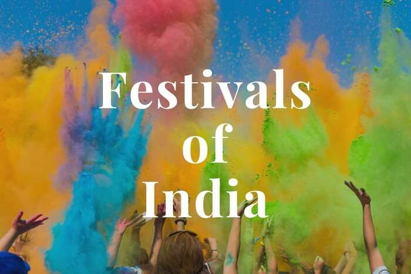

The culturally rich land of India, produces various festivals on its soil. To experience each of them is like living a hundred lives in one, they are that diverse in their essences. Nevertheless, the beautify of India is magnified by these festivals, so be sure to experience at least these 15 prominent ones, to mark not just your calendar, but your life with their names.
India is a country of dynamic culture, and every Indian celebrates many festivals wholeheartedly throughout the year. Every festival is unique in its way. Celebrating them while you pay a visit to the country is a great chance to explore the prosperity of Indian culture and heritage.
Indian festivals have always drawn travelers from around the world not only because of their gorgeous colors and boisterous participants but also because they are a great way to have meaningful experiences with the local people and see the country at its most joyful.
To give you a fair idea about all the festivals of India in 2021 and their dates, before you begin, here is a piece of information that would prove essential for you! It will also tell you about the importance of the famous festivals of India!,Here is a list of religious and national festivals of India that is celebrated in the country with much gusto and fervor. Plan your holidays around these festivals if you wish to explore the vibrant culture of India.